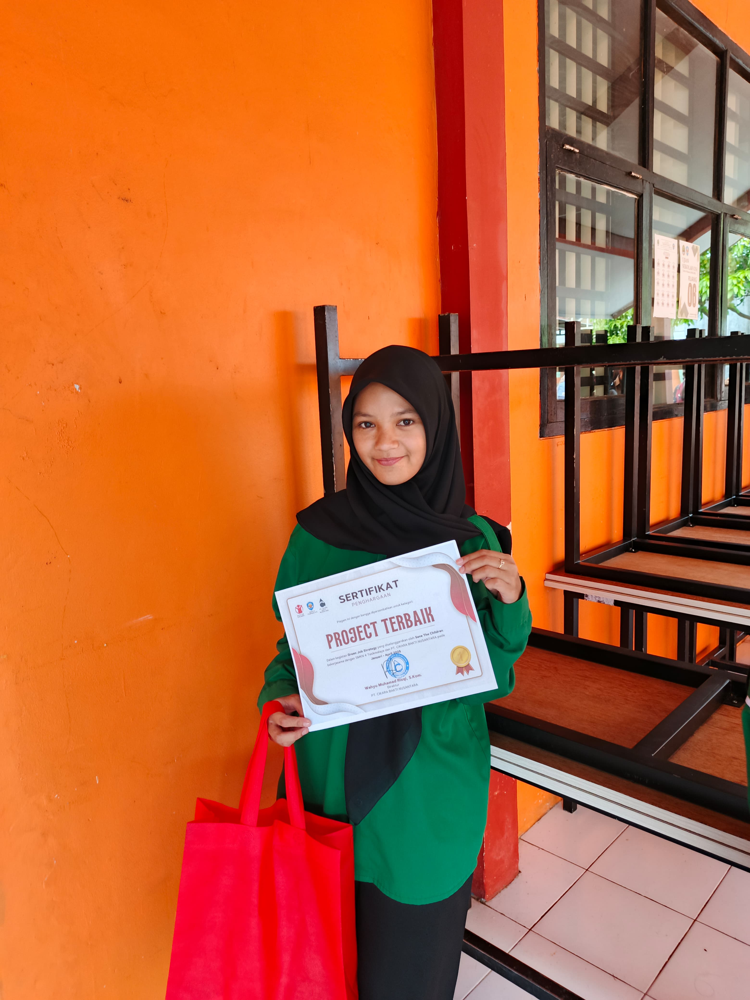

Tentang Saya
Halo, saya Salma Tsaniatul Munawaroh. Saya adalah lulusan SMK Negeri 4 Tasikmalaya dari jurusan Pengembangan Perangkat Lunak dan Gim. Harus saya akui, awalnya jurusan ini bukan passion utama, lebih karena mengikuti alur. Namun, proses di SMK mengajarkan saya banyak hal berharga tentang bertahan, tanggung jawab, dan menyelesaikan apa yang sudah dimulai. Sekarang saya melanjutkan pendidikan di Universitas Mayasari Bakti dengan prodi Informatika jurusan yang awalnya juga bukan keinginan saya. Meski begitu, saya berharap di perkuliahan ini saya bisa lebih serius, belajar dengan lebih sadar, dan menemukan arah baru yang benar-benar cocok untuk saya.